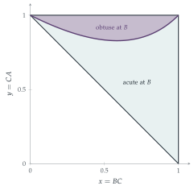

STEP III 1990, Question 16
Read the question before you go on. It is in the STEP Support Programme’s question database: step.maths.org/questions/90-s3-q16
The hook
Break a stick at two random points. Can the three pieces form a triangle? The famous answer is: with probability \(\frac14\). And if they do, is the triangle acute or obtuse? Obtuse, usually: only about a third of the triangles formed are acute. Questions like these, about random shapes, have entertained probabilists since the nineteenth century, and they are a perfect training ground for working with continuous probability: a random point in a region, a condition defining a sub-region, and an integral for its area.
This question takes two different ways of breaking the stick, and in each case asks how likely an obtuse angle is. The answers, \(3 - 2\sqrt2\) and \(3 - 4\ln2\), are unexpected numbers that come from simple geometry.
Before you start
Three lengths form a triangle if and only if each is less than the sum of the other two. If the lengths add up to \(L\), what does this say about the longest one? When is the angle opposite side \(c\) obtuse?
\(c < a + b\) with \(a + b + c = L\) means \(c < \frac L2\); so three pieces form a triangle exactly when every piece is shorter than half the total. By the cosine rule, the angle opposite \(c\) is obtuse exactly when \(c^2 > a^2 + b^2\).
Working it through
Stage 1 One cut, then halve
The pieces are \(X\), \(\frac{1 - X}{2}\), \(\frac{1 - X}{2}\). The two equal pieces are always less than \(\frac12\), so a triangle forms if and only if \(X < \frac12\). The triangle is isosceles; the equal angles are acute, so it is obtuse only if the angle opposite \(X\) is obtuse: \[X^2 > 2\Bigl(\frac{1 - X}{2}\Bigr)^2 = \frac{(1 - X)^2}{2}, \qquad\text{that is}\qquad \sqrt2X > 1 - X, \quad X > \frac{1}{1 + \sqrt2} = \sqrt2 - 1.\] Given \(X < \frac12\), \(X\) is uniform on \([0, \frac12]\), so \[\mathrm{P}(\text{obtuse} \mid \text{triangle}) = \frac{\frac12 - (\sqrt2 - 1)}{\frac12} = 3 - 2\sqrt2 \approx 0.172. \qed\]
Stage 2 The second construction
Check the three triangle inequalities for sides \(x\), \(y\) and \(2 - x - y\), for \((x, y)\) in the triangle with vertices \((1, 0)\), \((1, 1)\), \((0, 1)\).
The region is \(\{x \leq 1, y \leq 1, x + y \geq 1\}\). The inequalities are: \(x + y \geq 2 - x - y\), i.e. \(x + y \geq 1\); \(x + (2 - x - y) \geq y\), i.e. \(y \leq 1\); and \(y + (2 - x - y) \geq x\), i.e. \(x \leq 1\). All hold in the region (with equality on its edges, where the triangle is degenerate).■
The angle at \(B\) is opposite the side \(CA = y\). Write the condition \(y^2 > x^2 + (2 - x - y)^2\) as an inequality for \(y\).
Expanding, \(y^2 > x^2 + 4 + x^2 + y^2 - 4x - 4y + 2xy\), so \(4y - 2xy > 2x^2 - 4x + 4\), that is \(2y(2 - x) > 2(x^2 - 2x + 2)\). Since \(2 - x > 0\), \[\angle ABC \text{ obtuse} \iff y > \frac{x^2 - 2x + 2}{2 - x}. \qed\]
Stage 3 The area
Divide \(x^2 - 2x + 2\) by \(2 - x\). Then find the area of the part of the region above the curve, and divide by the region’s area, \(\frac12\).
Since \(x^2 - 2x + 2 = -x(2 - x) + 2\), the curve is \(y = -x + \frac{2}{2 - x}\). It runs from \((0, 1)\) to \((1, 1)\), and lies above the line \(y = 1 - x\) and below \(y = 1\) for \(0 < x < 1\) (Figure 12.21.1). The obtuse region lies between the curve and \(y = 1\), with area \[\int_0^1\Bigl(1 + x - \frac{2}{2 - x}\Bigr)\mathrm{d}x = 1 + \frac12 + \bigl[2\ln(2 - x)\bigr]_0^1 = \frac32 - 2\ln2.\] Dividing by \(\frac12\): \(\mathrm{P}(\angle ABC \text{ obtuse}) = 3 - 4\ln2 \approx 0.227\).■

Looking back
Translate geometry into inequalities. “Forms a triangle” and “is obtuse” both became inequalities between the lengths.
Conditional probability for continuous variables. Given \(X < \frac12\), \(X\) was uniform on the smaller interval.
Probability as a ratio of areas. For a uniform point in a region, probability is area divided by total area.
What’s really going on
The classic broken stick
Break a stick at two independent uniform points \(U\) and \(V\). The pair \((U, V)\) is uniform on the unit square, and the three pieces form a triangle exactly when each is less than \(\frac12\): that cuts out four small triangles of total area \(\frac34\), leaving probability \(\frac14\). Given that a triangle forms, the probability that it is acute is \(3\ln2 - 2 \approx 0.079\) out of \(\frac14\), that is about \(32\%\). The pieces are an example of a uniform random partition, and their joint distribution is the Dirichlet distribution, which appears in Bayesian statistics and in models of how a resource is shared out at random.
How you break the stick matters
Notice that the two methods in the question give different answers, \(3 - 2\sqrt2\) and \(3 - 4\ln2\), to similar-sounding questions, and both differ from the classic method. As with Bertrand’s chords (Section 12.3), “random” means nothing until the procedure is specified.
Problems about random triangles were popular Victorian puzzles. Lewis Carroll’s Pillow Problems (1893) asks for the probability that a triangle chosen “at random” is obtuse, and his answer, like those in this section, depends entirely on the model of randomness he chose. Problems about random triangles have continued to produce surprises: for instance, the probability that three uniformly random points in a square form an obtuse triangle is about \(0.725\), computed exactly only in the twentieth century.
The thinking skill
Represent the random outcome as a point in a region, the event as a sub-region, and compute probability as a ratio of areas (or an integral of a density).
At university, this picture is the foundation of multivariate probability, and of the change-of-variables formula, which tells you how densities transform when the coordinates are changed.
Try this next
The classic. Show that if a stick is broken at two independent uniform points, the probability that the pieces form a triangle is \(\frac14\).
Break the longer piece. Break a stick at a uniform point, then break the longer piece at a uniform point. Show that the probability that the three pieces form a triangle is \(2\ln2 - 1 \approx 0.386\).
Acute or obtuse. In part (ii), find the probability that the triangle \(ABC\) has an obtuse angle at \(C\) (opposite \(AB = 2 - x - y\)). Hence find the probability that it has an obtuse angle somewhere.
Expected longest piece. For the classic broken stick, show that the expected length of the longest piece is \(\frac{11}{18}\).
Further reading
Martin Gardner, The Colossal Book of Mathematics (Norton), which includes the broken-stick problem.
Frederick Mosteller, Fifty Challenging Problems in Probability (Dover).
Lewis Carroll, Pillow Problems (Dover, with A Tangled Tale). Victorian puzzles, including random triangles.